The Excelsior might not be a neighborhood any foodie thinks of but that doesn't mean there aren't some hidden gems you will find yourself craving daily. Ranging from sweet treats from the delicious bakeries to the awesome burritos, pupusas, and pizza!
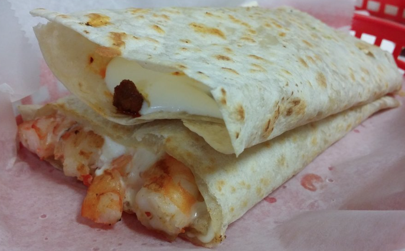
El Farolito has some of the best Quesadillas I've ever had. Hands down. When I was younger my great grandma would buy my little sister and me one to share (did I mention they're huge?) after our grocery run at the local mexican markets.
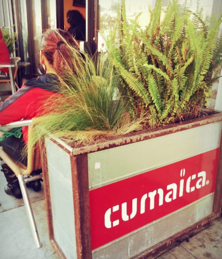
Cafe Cumaica has some delicious treats as well as some greta cafe! A relaxing place to just sit and do some work or people watch...and there's some pretty interesting people in the Excelsior.
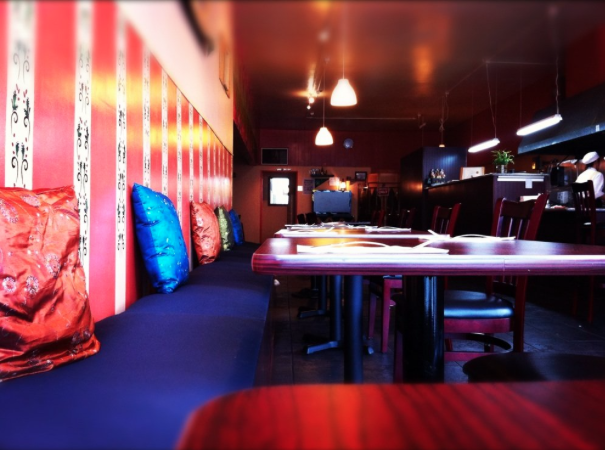
Zaab Thai Cuisine is one of those gems in the Excelsior you might miss if you're not looking. They have some awesome Thai foo to enjoy on your way to the local library. Oh yeah, also, pretty decently priced and $2.50 beer during happy hour(!)
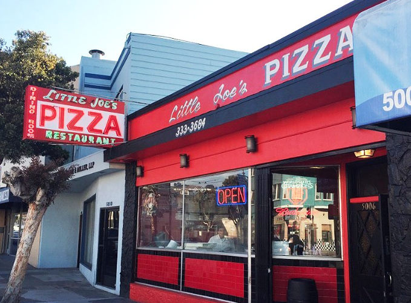
Little Joe's. Just the name itself makes my mouth water. An establishment I hold near and dear to heart, Little Joe's is my go-to pizza spot. There's no better pizza than what you get here...in my humble opinion. If you want awesome pizza from a old neighborhood joint, you have to come here! Bonus: If you choose to eat in house you will literally feel like you are on a set piece for one of the Godfather movies. This is an offer you can't refuse.
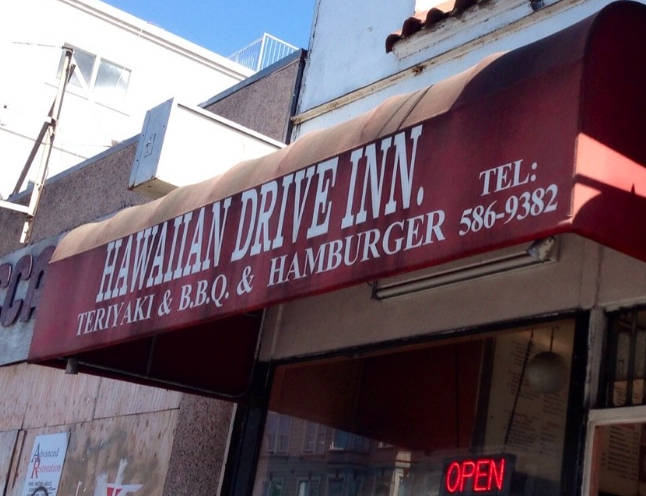
The people working here make tons of chicken katsu and loco moco for everyone from high schoolers to the fire department. It's not the prettiest establishment but it is definitely a favorite for people here and it gets the job done. You want some good food? Definitely come here.
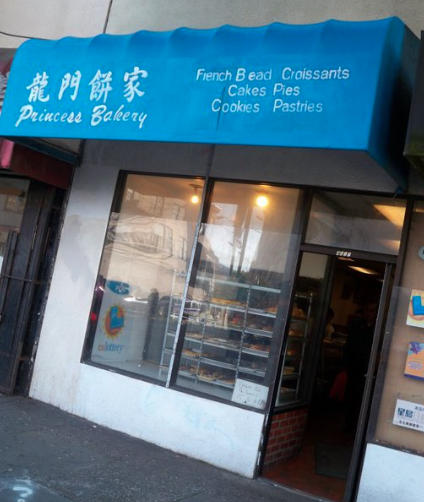
Princess Bakery was, and still is, our go to for birhtday cakes. The spongy-ness and not sweet frosting is just the best birthday treat. Also makes for some tasty breakfast the next morning (assuming you have left-overs). They also sell some really good french bread we always have with our tamales for Christmas.
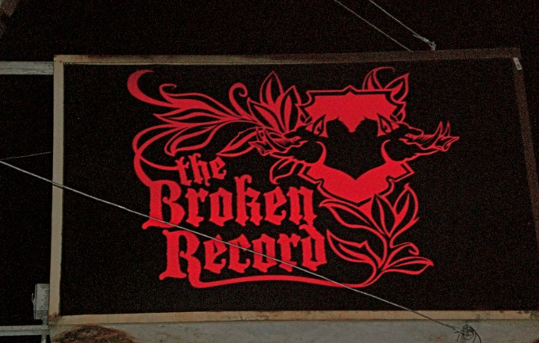
Broken Record is easy to miss, on a block of Geneva Ave. that doesn't really hold much else. It's not fancy but it has some amazing food and beer. Food good enough to be featured on the Food Network's Diners Drive-Ins and Dives.
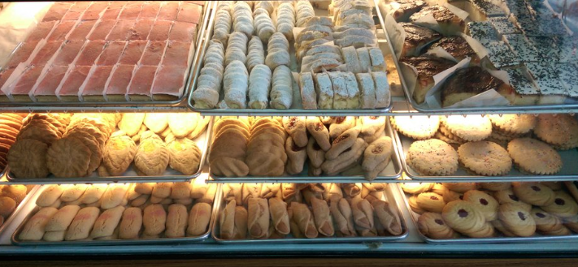
Pasita's is a Salvadorian Bakery right next to the bus stop. They make some pretty great pan dulce! Everytime I pass by there the aroma alone is enough to entice anyone to stop by for a sweet bread, or two, or three!
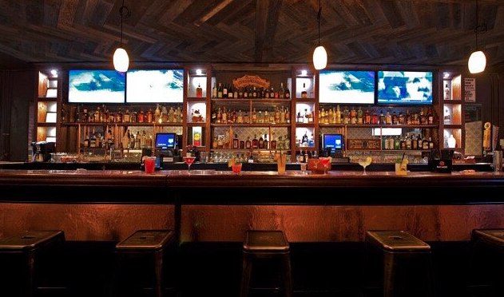
The Rock's Den is a pretty new establishment but it's a good place to catch the Giants or Warrior games. Pretty hip compared to the other establishments in the Excelsior but they have a good happy hour...need I say more?
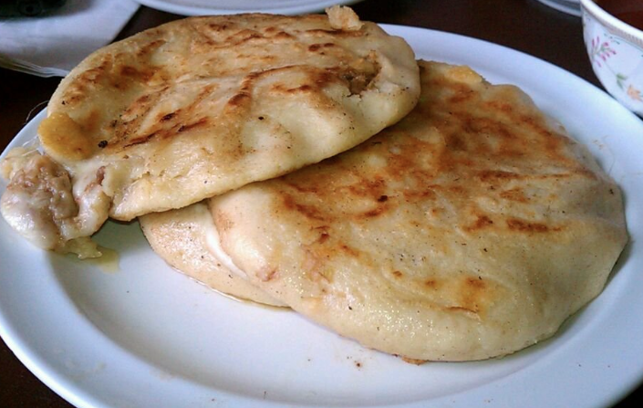
Los Planes de Renderos is located right next to Pasita's Bakery. If you some good pupusas before heading over to get your pan dulce, Planes is a great stop. Their pupusas are salty, cheesy goodness. I think I may have to run down and get some right now actually.
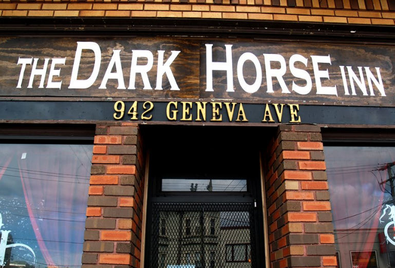
The Dark Horse is a divey bar but it has some pretty good beers and food. Also allows families to enjoy their meals and beers here!